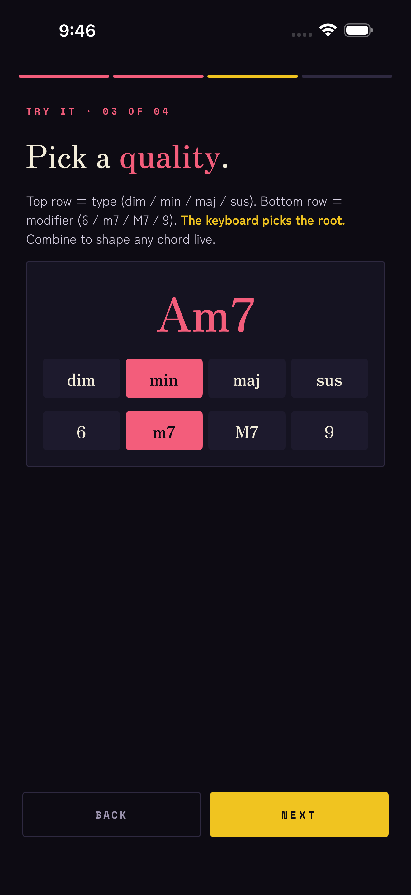
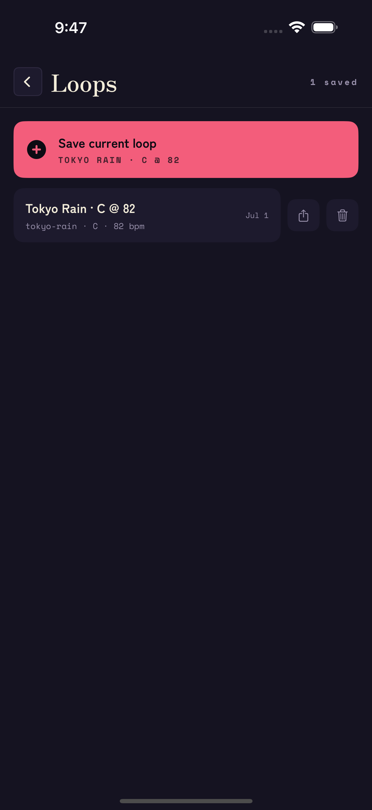
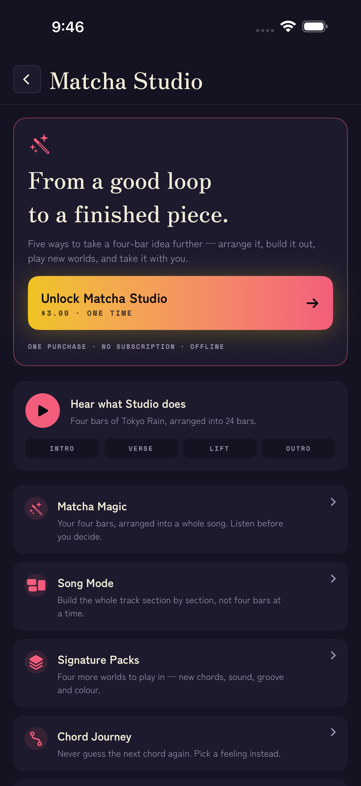

Your first loop 前奏
The short path from opening the app to something you can share:
- Choose a pack — a mood to play in. Tap one to hear it; Tokyo Rain is an easy place to start.
- Press play. Drums and bass come in, and the pack plays its own chords — the transport reads AUTO.
- Touch a key or a chord button and you take over. The keyboard picks the root; the buttons pick the colour.
- Tap the red circle to catch four bars, then save them, or hear Matcha Magic turn them into a song.
That is the entire loop. Everything below is just the same four moves, in more detail.
The app also walks you through this on the real screen the first time you open it — four short pointers at the keyboard, the chord controls and the two Studio features. You can re-run it any time from Settings.
Pick a mood 気分
A pack is a complete kit — synth, bass, drums, swing, tempo, chord palette and colour, chosen to sit together. Eight come with the app: Tokyo Rain, Study Session, Sunset Drive, Midnight Jazz, Rainy Cafe, Neon Sleep, Saturday Cartoon and Late Bus. Tap a pack to hear a short preview before you choose — on the first screen, and in the pack sheet while nothing is playing.
Four more — Rainy Taipei, Dusty Cassette, Bedroom R&B and Night Train — are Signature Packs, part of Studio. You can open any of them and hear it play before you decide.
To switch, tap PACK in the row above the transport and choose another. The whole instrument follows — you can change it whenever, and it never loses your place.

Play by feel 和音
Every chord is three small choices working together:
- The keyboard sets the root. Press A, and you are playing an A chord.
- The top row sets the type — dim min maj sus.
- The bottom row adds a colour — 6 m7 M7 9.
So A with min and m7 gives you Am7. Change any of the three and the chord updates as it plays. Voice-leading is built in, so moving from one chord to the next stays smooth on its own.
The slider above the buttons is the voicing — drag it to open the chord up or draw it in tighter.

You do not need to read music. If a change sounds good, it is good — that is the whole idea.
The keyboard leads 鍵盤
One octave, C to B — two on iPad. As a chord sounds, its notes light up, so you can always see what you are playing.
The keyboard also sets the register: press low for a warm, rounded voicing; press high for a brighter one. It is a feel control as much as a way to choose the root — the same chord can sit deep or float, depending on where you touch.
Shape the tone 音色
Five tabs sit just above the transport. Tap any one to open its controls:
- Sound — the lead voice: Rhodes, Pad, Bell or Organ. An experimental sampler can be switched on in Settings.
- Bass — Root, Walking, Octave, 5th, 3rd, Arp, or Silent when you want none.
- Drum — Boom Bap, Jazz, Lofi or Dilla, with swing and level to taste.
- FX — reverb and chorus to set the room, and tone to soften the top end.
Start from a pack you like and nudge one thing at a time. Small moves go a long way here.
Catch four bars 録音
Recording is free. Catch four bars of whatever you are playing:
- Tap the red circle. If nothing is playing yet, the drums, bass and the pack's chords start with it.
- Play along — change chords, drag the voicing, find something you like. Matcha records four bars as they play.
- Tap it again to stop. The bar count and tempo sit to the right of the transport.
When you stop, a card offers three things to do with the take:
- Save — it goes into your library with its pack, key and tempo.
- Make it a song — Matcha Magic arranges it into a whole track. Listening is free; keeping the arrangement is Studio.
- Share audio — send the take itself as audio. This one is part of Studio.

Keep your loops 保存
Save the current loop and it lands in your library with its pack, key and tempo remembered. Re-open one any time to keep playing, or to export it.
Everything stays on your device — no account, no cloud, no sign-in. To remove a loop, delete it in the library; to remove everything, delete the app.

Matcha Studio 工房
Studio is one purchase — no subscription, no account — and it unlocks the half of Matcha that finishes what you play. You can hear all of it first: the hub plays a built-in demo song, and Magic will arrange your own bars as many times as you like before you decide.
Open it from STUDIO in the top bar, or from Settings.
- Matcha Magic — pick a mood and it lays out an intro, verses, a lift and an outro from your four bars. Regenerate for another take; each one plays in full.
- Song Mode — reorder, duplicate and rename sections, set how hard each hits, swap the loop underneath. Playback crosses sections without a gap.
- Chord Journey — three directions from wherever you are: stay chill, add tension, take me home. The row sits under the chord card, and the first three plays are free.
- Signature Packs — Rainy Taipei, Dusty Cassette, Bedroom R&B, Night Train.
- Sharing and Pro Export — share a take's audio, or export a MIDI file (chords, bass and GM drums on their own channels), audio stems, or the whole song.

Studio also enables the AUv3 instrument. In GarageBand, Logic, AUM or Cubasis, add nono.audio: Chord Synth — the same voices and packs, played from your host. Open Matcha on the device once after buying so the plugin can see the unlock.